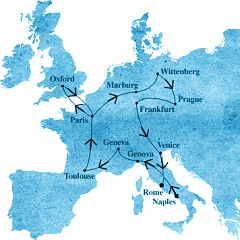

L'ICPA est une association privée créée par des amis et des collègues du journaliste Jack Lorski au lendemain de l'annonce de son meurtre en Écosse. Son seul but est d'aider les services de police et de justice internationaux à mettre fin le plus tôt possible aux agissements criminels du Phoenix.
SKL NETWORK est l'agence qui employait Jack Lorski. Elle a reçu et rendu public les deux CD-Roms envoyés par le Phoenix.
LIBERATION.FR a publié plusieurs articles sur l'affaire du Phoenix. Utilisez son moteur de recherches pour accéder à ses archives.
MODE OPÉRATOIRE ET SIGNATURE DU PHOENIX
Afin de mieux comprendre et d'anticiper les actes criminels d'un tueur en série, les enquêteurs étudient toujours deux éléments très caractéristiques : son modus operandi (mode opératoire) qui est la manière dont il opère pour commettre ses meurtres, et sa signature qui est un peu la « carte de visite » qu'il laisse sur chacune des scènes de crime.
Le mode opératoire concerne le type de victimes (hommes, femmes, personnes âgées, enfants, etc.), l'endroit et l'heure des crimes (dans une maison, un parking, un véhicule, de jour ou de nuit, etc.), les outils et le matériel utilisés pour tuer (corde, arme blanche ou à feu, poison, etc.), la manière dont l'agresseur approche ou attaque ses victimes (déguisement, utilisation d'Internet, charme, etc.), la présence ou non d'un complice (occasionnel ou habituel) et, enfin, tous les indices que le tueur a pu laisser derrière lui et qui expliquent comment il a opéré (traces d'effraction, empoisonnement d'un chien, par exemple).
La signature concerne plus ce qui permet de cerner la psychologie du tueur et ses motivations. Elle est ancrée dans sa nature profonde et c'est pourquoi il la répète à chaque meurtre. On peut presque décrire la signature d'un tueur comme étant « ce qu'il fait en trop », c'est à dire l'ensemble des actes qu'il commet mais qui sont « inutiles » ou « superflus » pour tuer ses victimes : tortures, mutilations, viol, etc. La signature concerne également la manière dont le tueur utilise les cadavres de ses victimes (inscriptions sur le corps, mises en position vulnérable ou dégradante, ou même mises en scène macabres avec accessoires) et, enfin, elle concerne toutes les sortes de messages (lettres, inscriptions sur les murs, signes étranges, etc.) que le tueur peut avoir volontairement laissés sur place.
Dans le cas du Phoenix et selon nos dernières informations, il semble avoir changé trois fois de mode opératoire et même de signature. D'après les spécialistes, cela arrive parfois lorsqu'il s'agit de tueurs particulièrement intelligents qui se sentent menacés ou qui doivent faire face à un évènement imprévu ; ce peut être également un choix délibéré de leur part indiquant alors un changement dans leurs motivations. Plusieurs meurtres dont le modus operandi diffère peuvent donc parfaitement être reliés et apparentés au même tueur.
- ANALYSE DES DOUZE PREMIERS MEURTRES
• Mode opératoire
1. Bien que les douze premières victimes soient d'âge et de sexe différents, elles étaient toutes membres de Manus Domini. Selon les écrits du tueur, c'est cette appartenance commune à cette société secrète qui a motivé le choix de ses victimes ; c'était pour lui une manière de venger le professeur Peter Volker, assassiné en 1975 par des sbires de cette organisation.
2. Les lieux des crimes diffèrent mais toutes les villes choisies sont liées au long parcours européen qu'entreprit le philosophe italien Giordano Bruno de 1565 à 1600 (Photo 1). De plus, dans chacune de ces villes, le Phoenix a choisi des endroits précis où son maître avait vécu ou enseigné, et où il s'était heurté à l'autorité religieuse, politique ou scientifique de l'époque. Le tueur réalisait ainsi un autre de ses objectifs : venger Giordano Bruno, condamné au bûcher en 1600 par la terrible Inquisition médiévale, dont Manus Domini semble être l'actuelle héritière.
Le choix de Guido Corliano, chef de Manus Domini en Europe, comme dernière victime de cette première série de meurtres, le choix de la Piazza Campo de' Fiori de Rome, où fut brûlé Giordano Bruno, comme lieu de ce crime, et enfin le choix du 17 février, identique à la date de décès du philosophe, comme jour du crime, ajoutent encore à la dimension hautement symbolique que le Phoenix a voulu donner à tous ses actes et témoignent du soin, de la précison et de la détermination avec lesquels il les a préparés et accomplis.3. Un autre point commun entre ces douze meurtres est la manière dont le Phoenix semble avoir trouvé ses victimes : il dit les avoir toutes identifiées par Internet, grâce à leur site personnel (José Cortado, Helena Whitford, Hilde Gardener, Carl Breitner), leur site professionnel (le frère Francesco, l'abbé Malard, Markus Hermann) ou même grâce aux sites de leurs proches ou d'associations dont ils faisaient partie (Gianni Maggioli, Carolina Molikova, Francesca Bartolini). Pour Guido Corliano, éminent spécialiste des langues anciennes, les enquêteurs pensent que le Phoenix le connaissait, au moins de nom, avant d'entamer sa série de meurtres ; quant à Antonio Foscarini, le tueur n'a pas eu besoin de le chercher puisque le journaliste enquêtait sur lui, il lui a suffi de l'attirer dans un piège qui respecte le rituel qu'il s'était fixé (tuer sa sixième proie à Paris), ce qui prouve d'ailleurs son étonnante capacité d'adaptation et l'extraordinaire sang-froid dont il peut faire preuve en cas de danger.
4. Le Phoenix a varié ses méthodes pour tuer ses victimes (arme à feu, arme blanche, étranglement, etc.) mais il n'a jamais utilisé de moyens indirects (sabotages ou plasticages de voiture, boissons empoisonnées, logements piégés, etc.), cela démontre au mieux sa totale insensibilité, au pire un plaisir certain à donner la mort de ses propres mains. Il est possible aussi que certaines manières de tuer fassent partie de la mise en scène de ses crimes.
5. Enfin, il semble que le tueur ait agi seul, soit en séduisant ses futures victimes (principalement les femmes), soit en usant de sa force (pour les victimes âgées ou physiquement faibles), soit en leur tendant des pièges (pour les victimes plus fortes). Là encore, l'utilisation alternée du charme, de la force et de la ruse en fonction de l'adversaire prouve sa faculté d'adaptation à toutes les situations, ce qui ne fait que renforcer son imprévisibilité et accroître sa « dangerosité ».
• Signature
1. La principale signature du Phoenix lors de ses douze premiers meurtres est la manière dont il a mis en scène les cadavres de ses victimes. Chacun d'eux, parfois accompagné d'accessoires, a été disposé de telle sorte qu'il rappelle l'énoncé d'un des douze principes élémentaires de la magie brunienne que le philosophe italien a décrit en 1591 dans son ultime traité, De imaginum idearum compositione ; sur le front de certaines victimes, le Phoenix a même marqué au fer rouge les symboles astrologiques correspondant à ces principes. Non seulement ces attentions macabres confirment la relation directe qui existe entre tous ces meurtres et Giordano Bruno, mais elles mettent l'accent sur une particularité du philosophe : son attachement à la magie solaire et à l'hermétisme égyptien.
2. Près de chaque cadavre, ou parfois même dessus, le Phoenix a tracé l'inscription latine « SOL INVICTUS » (Photo 2), le plus généralement avec le propre sang des victimes. Ce message lié au nom que le tueur s'est lui-même choisi, « Le Phoenix », fait de nouveau référence au culte solaire et à la tradition magique de l'Égypte ancienne. 3. Le Phoenix n'a violé aucune de ses victimes mais il les a presque toutes méticuleusement torturées, le plus souvent en les brûlant au fer rouge ou parfois en utilisant une arme blanche. Le tueur ne semble donc pas agir sous l'emprise de pulsions sexuelles ou criminelles, mais plutôt d'une manière réfléchie et préméditée. - ANALYSE DU TREIZIÈME MEURTRE
La mort d'Alex Borgo ne présente aucune caractéristique commune avec les douze premiers meurtres du Phoenix, ni même avec ceux qui vont suivre. La victime qui n'était pas membre de Manus Domini a été tuée chez elle, d'un seul coup de fusil tiré à bout portant ; de plus, ce meurtre semble avoir été maquillé en suicide, ce qui va totalement à l'encontre des précédentes habitudes du Phoenix. Le mode opératoire très classique et l'absence totale de signature ne font d'ailleurs pas penser au crime d'un serial killer, mais plutôt à un règlement de compte crapuleux ou passionnel commis par un tueur occasionnel. Plusieurs mois après l'avoir perpétré, le tueur a pourtant revendiqué ce meurtre dans un cd-rom envoyé à SKL Network, en expliquant qu'il avait éliminé Borgo uniquement parce que l'enquête du journaliste sur la société secrète Manus Domini risquait de perturber ses plans et particulièrement sa recherche du codex 14. Sans cet aveu, il aurait été bien difficile aux enquêteurs de relier ce crime aux douze précédents. - INFORMATIONS SUR LES NOUVEAUX MEURTRES
• Mode opératoire
Dans l'état actuel de nos recherches, il nous est encore impossible de définir un mode opératoire commun aux trois meurtres commis en Espagne, et à celui de Jack Lorski commis en Écosse. Tout ce que l'on sait actuellement, c'est que les victimes espagnoles étaient des hommes d'une même tranche d'âge (60-70 ans) qui habitaient tous les trois dans la région de Grenade, en Andalousie.
Nous n'avons hélas aucune information précise et vérifiée sur les circonstances de la mort de notre ami Jack et nous espérons vivement que le décryptage du DVD-ROM reçu récemment par le président de l'ICPA nous renseigne à ce sujet.
• Signature
En revanche, s'il est encore trop tôt pour désigner le Phoenix, nous sommes maintenant persuadés que ces quatre meurtres ont bien été commis par une seule et même personne ; en effet, leur signature est nette et précise :
1. Les quatre victimes ont été sauvagement torturées puis tuées à l'arme blanche. Elles présentaient toutes de nombreuses blessures pré-mortem.
2. Les bouches des quatre victimes ont été entaillées en forme de croix et contenaient un morceau de parchemin représentant une partie d'un cadran solaire.
3. Enfin, les quatre corps ont été amputés d'un membre ou d'un organe : une main, une oreille et la langue pour les trois victimes espagnoles, et une grande partie du tronc pour Jack Lorski.
Tous ces signes, toutes ces « marques de fabrique » sont la preuve que ce tueur en série, Phoenix ou pas, respecte un rituel bien défini. Cette nouvelle signature, sensiblement différente de celle des douze premiers meurtres, peut être le signe d'une évolution ou d'un changement de comportement lié à des faits nouveaux (la récupération du codex 14, par exemple). Si tel est le cas, cela signifie que le Phoenix s'est fixé un nouvel objectif, certainement redoutable, et qu'il a entamé une nouvelle série de meurtres rituels, encore plus atroces que les premiers, pour l'atteindre coûte que coûte.